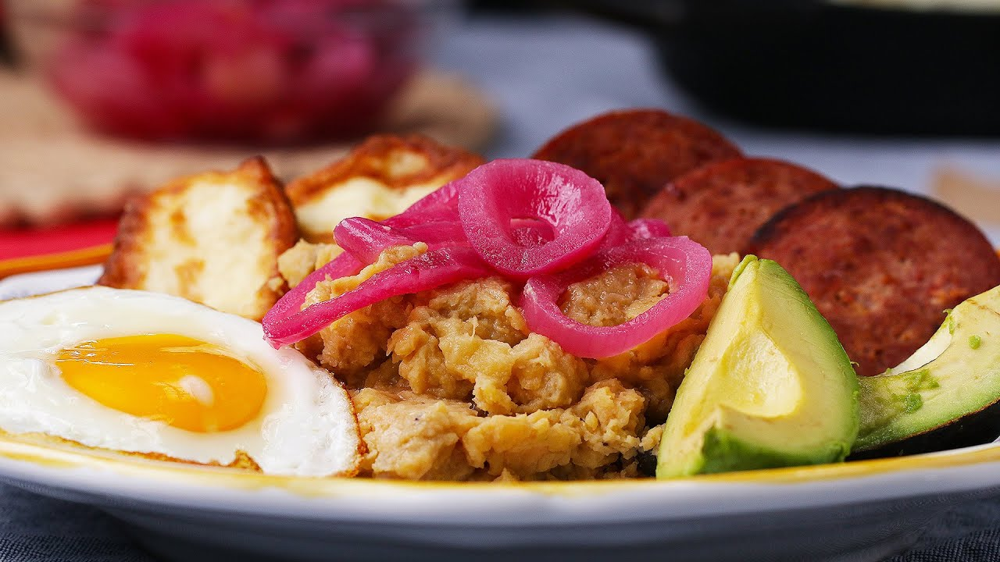

Mangu Con Los Tres Golpes

Description
A Dominican classic – creamy mangú, crisp fried salami, chewy queso frito, tangy pickled red onions, and a sunny side egg come together for the perfect comfort breakfast.
Ingredients
- 1 red onion, sliced into rings
salt, to taste
- 1 cup vinegar
- 6 plantains
- 5 cups water
- 2 cups canola oil, divided
- 12 slices dominican frying cheese, queso de freir
- 1 cup flour
- 18 slices dominican salami, salami frito
- 6 tablespoons butter, sliced
- 6 eggs, fried, for serving
- 1 avocado, for serving